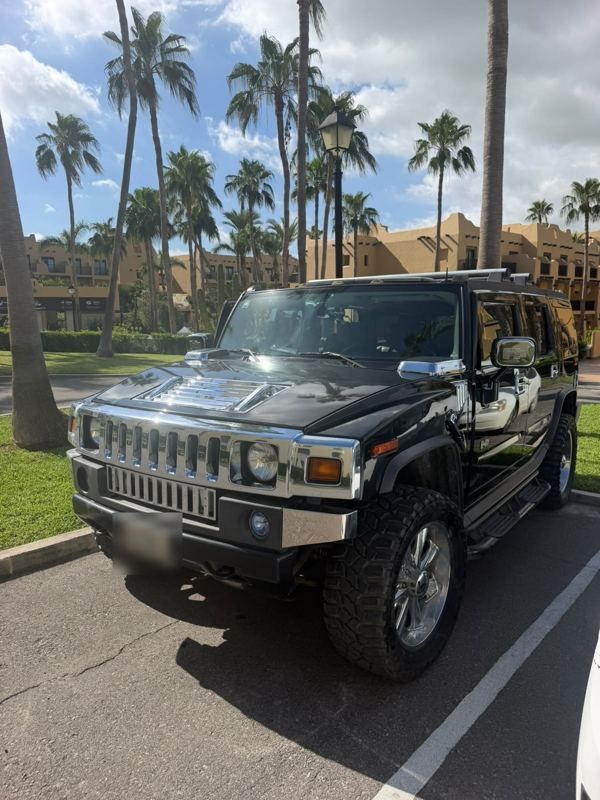
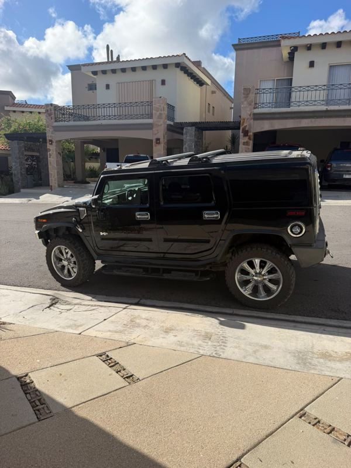
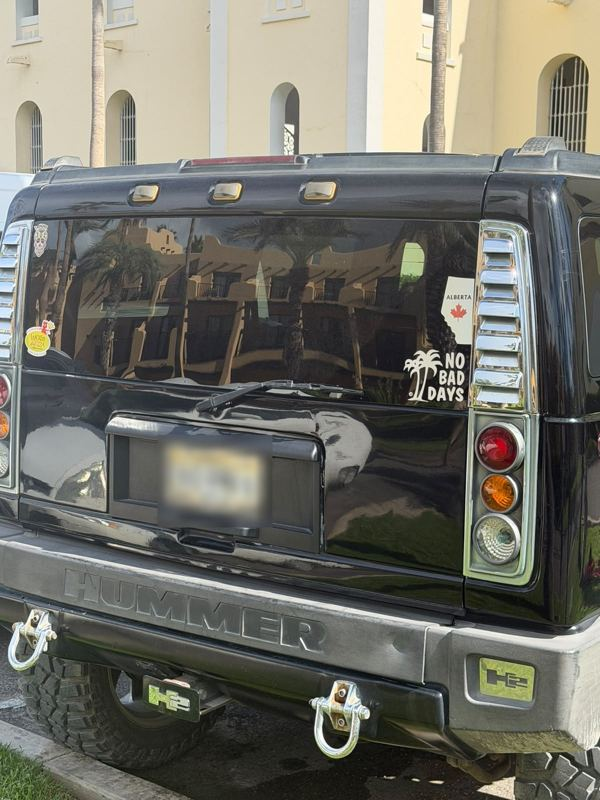
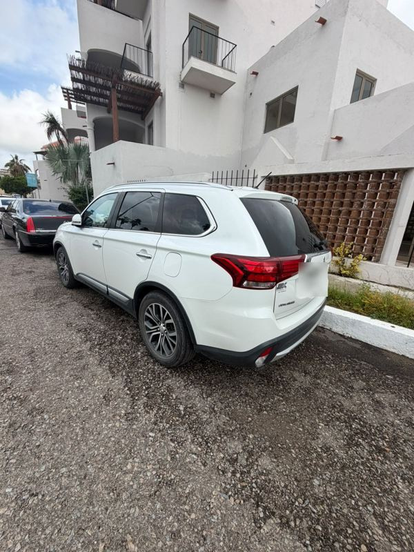
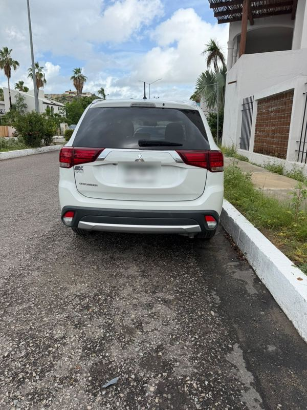
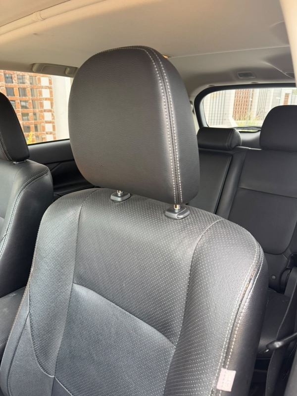
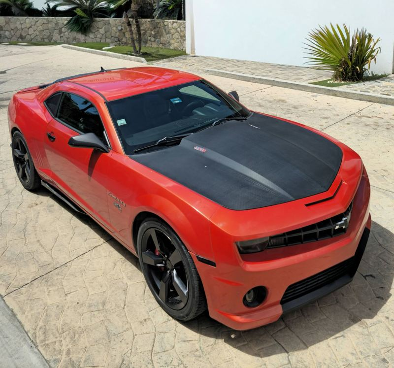
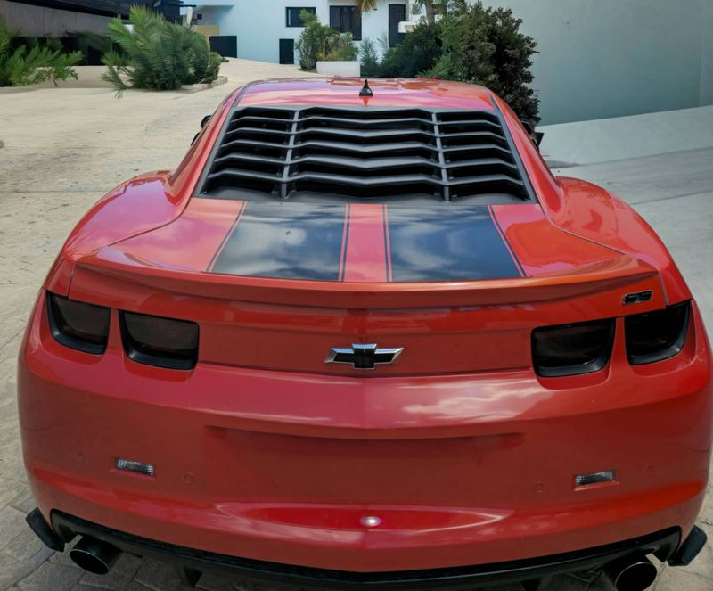

$15,000USD≈ $276,000 MXN
Cabo San Lucas y San José del Cabo, Baja California Sur
Deportivos, SUV familiares y 4×4 con papeles en regla. Publicamos tu auto, filtramos a los interesados y te conectamos directo con el comprador correcto.
5 vehículos en Los Cabos, BCS, revisados y con documentación en regla.












No hay autos en esta categoría por ahora. Escríbenos y te avisamos cuando llegue uno.
Dinos marca, modelo y presupuesto. Te avisamos en cuanto llegue uno a Los Cabos.
Autos que ya encontraron dueño en Baja California Sur.
Nosotros lo publicamos, atendemos a los curiosos y solo te presentamos compradores serios. Tú decides el precio y cierras el trato directo.
Nuestra comisión es un porcentaje del valor final de venta, acordado contigo antes de publicar. Si el auto no se vende, no pagas nada.
Lo que más nos preguntan sobre comprar y vender autos en Los Cabos.
Todos los vehículos se encuentran en Los Cabos (Cabo San Lucas y San José del Cabo). Atendemos compradores de todo Baja California Sur: La Paz, Todos Santos, El Pescadero, Los Barriles y más; coordinamos para que veas el auto en persona.
Escríbenos por WhatsApp con marca, modelo, año, kilometraje, precio deseado, estado de la documentación y fotos. Validamos que cumpla nuestros criterios, lo publicamos, filtramos a los interesados y te conectamos con el comprador serio para formalizar la venta.
Cobramos una comisión: un porcentaje del valor final de venta que se acuerda antes de publicar. Solo se paga si el vehículo se vende.
Vehículos importados con pedimento y nacionales con factura, en buen estado, sin fallas mecánicas no declaradas y con papeles en regla. No publicamos autos afiliados, con adeudos, con reporte de robo o con documentación irregular.
Sí. Te ponemos en contacto con el propietario y coordinamos una cita para que lo revises en persona en Los Cabos.
Yes. We assist buyers and sellers in English and Spanish across Los Cabos and Baja California Sur. Message us on WhatsApp.
Escríbenos por WhatsApp para una respuesta rápida, o déjanos tus datos y te contactamos.